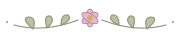
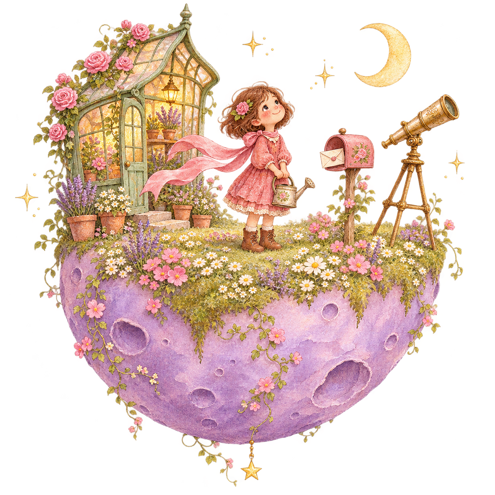

a tiny place for your heart to land
A Planet of Her Own.

Somewhere, a little planet
is waiting for you.
No hurry. The stars can wait.
oh, hello. you made it.
Make yourself a little at home.
Three little wonders, just for you.
Follow your curiosity.
0 of 3 little wonders discovered
AND THEN, A NEW DAY
The sky is big.
You belong here.
Come back whenever the sky feels too big.
Your little planet will be waiting.

a very small planet. a very big welcome.